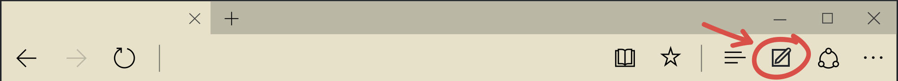

The Web Note coloring book and practice guide
Web Note is a new feature of Microsoft Edge. It helps you write, draw and make notes directly on the web page. You can also share the web page with your notes on it.
This animal themed coloring book will take you through how to use Web Note. Click the and scroll down to start with the maze.

Click the browser's and then scroll to get started!

Complete the maze
Connect the dots
Animal word jumble
Color in the turtle
Color in the kangaroo
Color in the koala
Color in the whale